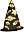

| | Allograph Neologism Uploaded - 8/30/05 - 4:45 pm (GMT-5)Bryan Ashley James Parry posted a new Neologism, Allograph (n.). An instantiation of a particular spelling under certain circumstances. For instance, the allograph of English /au/, word finally, is "aw". Likewise, the word-final instantiation of English /ai/ is "ay". (read more)
|  | The Duke Of Uranium Book-Media Uploaded
| | | Language Identifier Resource Added
| | | Freecycle Neologism Entry UpdatedMichael Farnsworth edited the Neologism profile for Freecycle (v.). "Heard it being used in 1987 and since then personally." (read more)
|  | Munhan Neography UploadedJeffrey Henning submitted a new Neography, Munhan. "A unique featural writing system, where the features combine to create symbols that represent syllables while being evocative of Chinese characters." (read more)
|  | Yudrûskd Babel Text EditedStevo edited the Babel Text profile for Yudrûskd (Slang unumärghd - A blackened tongue). "20050730." (read more)
| | | Fauxteur Neologism UploadedDypsis Cabadae added a new Neologism, Fauxteur (n.). A "talentless, pretentious hack", usually in reference to a film director, but occasionally applied to any sort of director or even producer. (read more)
| | | Flash Gordon: The Lion Men Of Mongo Book-Media Submitted
| | | Greenberg's Universals Resource PostedAnsric submitted a new Resource, Greenberg's Universals (Natural Language Reference). Greenberg's "Some Universals Of Grammar With Particular Reference To The Order Of Meaningful Elements" (including his list of universals). (read more)
| | | Twitterati Neologism AddedDavid Johnson submitted a new Neologism, Twitterati (n.). "A self-appointed elite of uninformed literary commentators." (read more)
| | | Bukhstav Neography PostedPete Bleackley submitted a new Neography, Bukhstav (The runic alphabet of Khangaþyagon). This is a runic alphabet used by the wizards of Huna to write Khangaþyagon. The romanisation is shown to the left of each rune, and corresponds to the CXS with the following exceptions
kh = [x]
a = [&] (long a = [a:]
þ = [T]
sh = [S]
r = [4]
ð = [D]
zh = [Z]
ng = [N]
y = [j]
Two forms of each vowel are shown - the first represents the short vowel, the second the long vowel. Diphthongs are represented by joining the long form of the first element to the short form of the second element at the upper point of the diagonal.
The last rune (marked ") is a gemination rune, which lengthens the preceding consonant. (read more)
| | | Kor'ekhani Babel Text ChangedJ. Matthew Saunders changed the Babel Text profile for Kor'ekhani. "Tweaked the grammar and the vocabulary." (read more)
| | | IPA Keyboard Layout For Mac OS X Resource UploadedJonathan Bettencourt posted a new Resource, IPA Keyboard Layout For Mac OS X (Software). This is a link to download a keyboard layout for Mac OS X that will let you type IPA. Drop it in your ~/Library/Keyboard Layouts folder on OS X, check it in the International pref pane, and you can type IPA. Keystrokes for the most part correspond with X-SAMPA. Shift gives you characters represented by a capital letter, and Option gives you characters represented by a letter with a tick (`) or slash after it. Shift-, followed by a letter will get you a voiced implosive, Shift-. will get you the apostrophe for ejectives. Option-` then a character (specifically the one after a _ in X-SAMPA) will put diacritics on things. R, Shift-R, Option-R, Option-Shift-R, 4, Option-Y, Option-U, and Option-I will get you all the different rhotics and R-shaped characters. Option-Shift-S/Z gets you /s\/ and /z\/, since Option-S/Z are taken by /s`/ and /z`/.
(read more)
| | | Snirt Neologism SubmittedMauro Baglieri uploaded a new Neologism, Snirt (n.). "Dirty snow." (read more)
| | | Color Of Distance, The Book-Media UploadedJeffrey Henning submitted a new Book-Media, Color Of Distance, The. "I've seen 'color languages' in science fiction before; all, as described, were really codes, unsuitable for use as true languages. Tendu, in which the color/picture/pattern components in simultaneous interaction would provide a huge potential inventory of forms, is far more plausible...." - Review by Suzette Haden Elgin (read more)
| | | Zdekkite Neography UploadedTom R. added a new Neography, Zdekkite (Zdekka). "Used by the Zdekkites. Some of the letter sounds represent sound changes that the Zdekkite language underwent. Official language of the planet Zdekka, and also the planet Nuzhis, controlled by Zdekka. Alphabet has only 19 letters, but due to sound changes, represents about 26 or so phonemes." (read more)
| |  | Conlang Of The Month ClubI haven't been posting to the blog this month much, as besides being swamped at work, I've been taking BobbyO's Language of the Month Club advice. I've been spending 15 to 30 minutes each evening writing in Esperanto. It's been very rewarding, and I think I'll do this once or twice a year.
I'll go into more detail in the next few days, but for now I want you to consider picking a constructed language to study and use in October for 15 minutes a day. (I realize that September is coming up quick and will be busy for many of you.) For reasons that will become clear, I want you to consider one of the following conlangs: Esperanto, Ido, Interlingua, Interlingue, Klingon, Lojban, Toki Pona or Volapük. And if you already speak one of these languages, I hope you will mentally reserve some time in October to help these new learners.
Meanwhile, bonus points to anyone who can contact me in the next few days identifying what those conlangs have in common that the conlangs I've excluded lack.
More to come! (permalink)
| | | Slickery Neologism AddedMauro Baglieri posted a new Neologism, Slickery (adj.). "Wet and icy at the same time." (read more)
| | | Phonecrastinate Neologism PostedMauro Baglieri submitted a new Neologism, Phonecrastinate (v.). "To avoid answering the phone until it stops ringing and the caller's number is displayed." (read more)
|
1,429 conlangs indexed |

| Random Conlang | | GaciçaAuthor: Ted KlobaYear: 1998Type: fictional language |
Recent CONLANG-L Messages
Recent ZBB Messages
| Langmaker Soundbite | | | Rick Harrison's planned language Vorlin has some interesting words: the basic sense of the word bat is "a ball-hitting tool", with its radiated meanings including "bat, hockey stick, and tennis racket", while the word sop means "soup" and "stew". Other Vorlin words cover a smaller range of meanings, so that for, "form, shape", does not include other senses of English form like "a paper document to be filled in", "a molding to be filled with concrete" or "manners or conduct". | | | (read more) |
|

Rigalese
|